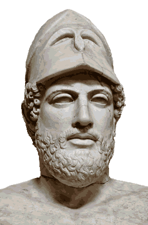
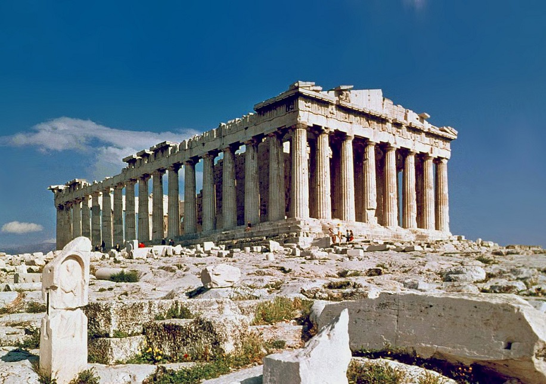
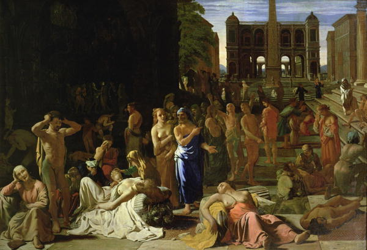

Pericles was the greatest leader in all of Athenian history, perhaps even all of Greek history itself. Pericles turned the Delian League of Greece into the Athenian Empire that spawned the majority of great works that the city-state is remembered for today. His management of Athens begat its Golden Age, and his impact on Athens was so great that Thucydides gave him the title of “the first citizen of Athens.” However, all glory that Athens achieved under him would never have occurred if not the wars that allowed Pericles to rise to power.
Pericles was born in 495 BCE in Athens, to his father Xanthippus and mother Agariste. He was part of the first generation of a new type of politics, one that relied on public opinion rather than aristocracy and elitism. His father Xanthippus was very much a man of the old politics, as he came into power through marriage with the Alcmaeonids. However, Xanthippus later was at odds with Alcmaeonid ideals and tried to garner support for himself politically. This maneuver failed, ending with his ostracism in 484 BCE. But Xanthippus returned in 480 BCE to command the forces at Mycale the next year. Through his father, Pericles inherited not only material wealth and property at Cholargus, but also the idea of siding with the majority rather than the elites.
As a young child, Pericles was taught by the musical theorist Damon, as well as the Sophist philosophers, particularly Anaxagoras, during his middle years. It is from Anaxagoras that Pericles learned vital skills from, as well as being skeptical when faced with divine wonders and miracles. The rest of his early life is unknown, up until 472 BCE, when Pericles commissioned Aeschylus’ Persian trilogy. Then in 463 BCE, Pericles failed to indict Cimon, an Athenian general at the time, for not conquering Macedonia. Pericles was obviously in favor of an aggressive foreign policy for Athens that would have involved rapid expansion, but he did not have the power to sanction such things at the time. Over the next couple of years, Cimon was ostracized, and Athens grew further apart from Sparta, preparing for war and Pericles leadership.
After the death of Ephialtes, the head of the democratic party before Pericles, in 461 BCE, Athens engaged in warfare with many other Greek states. However, the Greeks came to the conclusion that it would be more favorable to fight Persia than each, and so brought Cimon back from his exile to lead their forces against the Persians. When Cimon died around 451 BCE, the Persian War formally came to an end, with Athens still in the same state as it was since Xerxes sacked it all those years ago. After the Greeks formalized their truce with the Five Years’ Truce of 451 BCE, Pericles set out to restore Athens’ to its former glory, and even further to the head of the Greek civilization.
During the war with Persia, the Greeks formed the Delian League, a free alliance of Greek states that pooled resources to fight off the Persian threat. When the Persians actually were a problem, the league worked perfectly, as even if a city could not provide funds for the treasury at Delos, they could donate ships or soldiers to fuel the war effort. But after the war with Persia concluded, Pericles turned the Delian League into a vehicle for the creation of an Athenian Empire. Pericles called a conference of Greek states to discuss the restoration of Greek temples, primarily in Athens, by using funds from all the Greeks. Sparta refused to take part in what was essentially paying tribute to Athens, as the entire war against Persia was to prevent such a deal with the Persians. Pericles pushed on nonetheless, on the basis of an Athenian alliance, and so enough states agreed that he was able to draw on both their tribute and Delian League funds to rebuild Athens, as well as the construction of the now world renowned Acropolis. This strained ties with Sparta further, and Pericles’ movement of the Delian League treasury to within Athens drove the two city-states apart even more.
With the tribute from the states that agreed to cooperate, Pericles was able to commission the temple that became the Parthenon in 447 BCE, as well as a gold and ivory statue of Athena that would be housed inside. Along with the works of art, Pericles had walls constructed all around Athens, even to its ports, so that it would be protected from any possible Spartan aggression. The buildings and temples that Pericles was constructing were far grander and more expensive than any other work in Athenian history. However, while the works that were being built were no doubt great, Pericles encountered much criticism from Athenians and non-Athenians alike. Even Thucydides, known for holding Pericles in very high esteem, denounced the squandering of Delian League resources on extravagant projects. Pericles retorted that Athens’ allies were paying for protection, and so Athens had every right to do as they pleased. The argument between the two ended poorly for Thucydides, as he was ostracized for ten years in 443 BCE.
As tensions against the use Delian League funds mounted, revolts began to crop up throughout the Athenian Empire, which was settled with Pericles creating more settlements to strengthen his control. In doing so, Pericles was also able to expel the barbarians from modern Gallipoli. In 447 BCE, the cities of Boeotia revolted, defeating a small Athenian army. Two more vital cities revolted successfully, Euboea and Megara. Pericles accepted the losses, however, and began to turn Athens into a fully maritime empire, essentially a full blown thalassocracy. In addition, Pericles also began the construction of another wall, in between the city and Megara, as the latter was a vital location that the Spartans could use to launch an invasion into Attica at any time. With its new defenses, Athens steadily continued on its path to dominating the Aegean region.
Around this time, tensions with Sparta began to die down, and Pericles made endeavours in his personal life. His first wife, although unknown, was sure to have been wealthy and of high status. However, he divorced her 10 years later as they did not share the same beliefs. When Pericles was nearing the age of 50, he married Aspasia of Miletus, who would go on to teach Socrates rhetoric. However, due to his own law that he had passed earlier in his life, any sons that Aspasia bore him would not be legitimate citizens of Athens, as he passed a law that required citizenship of both parents in order for one to also be a citizen. This became especially problematic when his two sons from his first marriage died, leaving Pericles with essentially an illegitimate son.
As the construction in Athens grew more and more grand, Pericles demonstrated Athenian dominance in more than just art and war. During Athens’ Golden Age, Pericles had many Panathenaic events created, including the Olympic Games. However, the years of relative peace were interrupted by Pericles’ last military campaign. In 440 BCE, one of Athens’ stronger allies, Samos, attempted to revolt with a fairly large force of its own. The fight to retake Samos was, although ultimately a victory for Pericles, long and costly. Even so, the war became a measurement that later Athenian generals used to measure their own success. There was fear that Sparta may have attacked during this time, but the Spartans upheld the truce set by the Thirty Years’ Peace until the late 430s BCE. However, tensions continued to grow, and both city-states prepared for war, until the battle was finally sparked by a conflict between Corinth and Corcyra.
The Peloponnesian War started when a group of exiles came to Corcyra for help, and after being turned away, went to Corinth. Seeing that their enemies would benefit, Corcyra went to take the group themselves, and when the two city states disagreed, they both went to Athens to settle the dispute. Athens ended up siding with Corcyra, pushing Corinth to Sparta and starting the Peloponnesian War. Pericles chose a strategy of sticking with the sea, telling his people to forfeit their lands in the countryside and bolster their navy. This was his first mistake as Athens was a city with its origins in land, and as the tensions of war wore down the Athenian people, Pericles was eventually removed from power. He was however reelected, but was never able to recover from the effects of the war. But the war with Sparta spawned his most famous work, one that he himself spoke rather than commissioned: his funeral oration after the first campaign.
Pericles’ funeral oration was a great work of propaganda, as it basically re-galvanized the people’s belief in his system. After he was through with the pleasantries of introduction, Pericles asked his audience how Athens came to be as great as it was then, and he went on to explain Athens glory, and how it was the predominant city-state. His speech painted a picture of an idyllic democracy that exaggerated the benefits of Athenian government. Through his oration, Pericles reaffirmed Athens’ belief in its government and was able to maintain its Golden Age for a little while longer. However, his best efforts were no match for the plague which struck Athens in 429 BCE, which claimed him among its victims. Without Pericles’ leadership, Athens fell into chaos, as its government made mistake after mistake in attempting to sustain the glory that Pericles brought. His successors strove to be popular rather than effective, ruining the Periclean age and bringing Athens back down into the state it was politically before Pericles ever took power. Athens succumbed to darkness that halted all the intellectual and cultural progress made by Pericles, and ended up with the indictment and execution of Socrates in 399 BCE. As said by Thucydides, the death of Pericles was truly a disaster for Athens.
